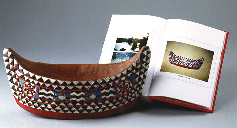

義助慰安婦 —— 李敖百件珍藏義賣藝術品（第77件） 品 名： H7. 台灣高山族木雕彩舟 預估價： 10 萬 成交價： 10 萬 說 明： 世界上有許多藝術品一旦受到青睞時，往往會比它寫生的對象來得重要。當年羅丹為蕭伯納塑像，就曾說：「這一作品比蕭伯納本人還偉大！」這個彩舟是在日月潭買的。李敖曾為它寫了一篇文章，名為「我最難忘的一件木雕」，收在《李敖大全集》第 20 冊裡。希望這木雕與文章一直流傳，為台灣史做一悲愴見證。 
世界上有許多藝術品一旦受到青睞時，往往會比它寫生的對象來得重要。當年羅丹為蕭伯納塑像，就曾說：「這一作品比蕭伯納本人還偉大！」這個彩舟是在日月潭買的。李敖曾為它寫了一篇文章，名為「我最難忘的一件木雕」，收在《李敖大全集》第 20 冊裡。希望這木雕與文章一直流傳，為台灣史做一悲愴見證。